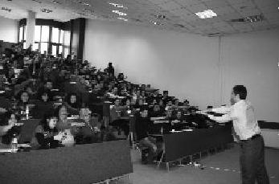

Türkiye Uğur Böcekleri Projesi, yeni şeyler öğretmekle yetinmeyip insana bildiklerini hatırlatan, farkındalık yaratan, ışık saçmakla kalmayıp ışığı ortaya çıkartan bir proje. Hayat denilen süreçte her insan bir arayış içindedir ve bu proje, arayışların sonuç noktası benim için. (Fatih Özmen)
Fatih, çakmak çakmak gözleri ve organizasyon becerisiyle takdir ettiğim bir çocuk. Antalya böceklerini o kurdu ve çok şey başardı. Antalya, eğitici eğitimine gittiğimde, ekibine nasıl liderlik ettiğini gördükçe gurur duydum onunla. Çok başarılı bir işadamı olacağını düşünüyorum Fatih'imin.